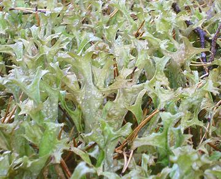
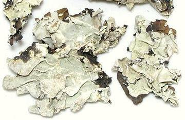
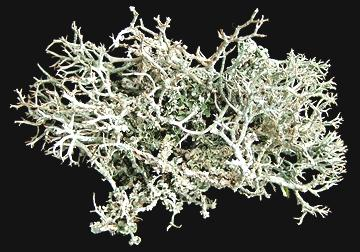
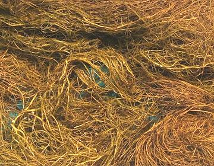
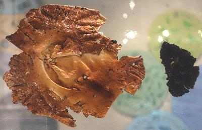

Lichens
Lichens are symbiotic composite organisms consisting of a fungus body
within which live either single cell algae or cyanobacteria. This
relationship, playing on the strengths of each, allows the organism to
live in extremely harsh environments, from arctic tundra to dry deserts
and on bare rock, though they are also abundant in temperate and
rainforest environments. Lichens are used as food by many cultures
around the world, sometimes as a survival essential and sometimes as a
delicacy.
More on Fungus.
More on Algae & Cyanobacteria
Iceland Moss

[Cetraria islandica of family Parmeliaceae]
Not actually a moss, and not confined to Iceland, though it is
particularly lush there. It grows in Arctic and sub-Arctic environments
all around the northern hemisphere, and much farther south in alpine
regions. For a lichen, it has an unusually erect growth habit. It is
eaten by various northern peoples, and it is also used medicinally.
The photo specimen is from central Sweden.
Photo by Amphis contributed to the Public Domain.
Buying:
This lichen, dried, is available for purchase
on the Internet - but it isn't cheap.
Cooking:
This lichen was included in bread and
used in porridges, puddings, soups, and salads. Dried lichen can be
used as a substitute for other starches. It is not much used today
except medicinally.
Dagad Phool

[Black Stone Flower; Dagad Phool (Marathi); Kalpasi, Kallupachi, Phathar
Ka Phool (Tamil); Riham karmani (Urdu); Kalahu (Kannada); Shaileyam (Sanskrit);
Dagar da Phool (Punjabi); Patthar ke phool (Hindi); Bojhwar, Chadila,
(northern India); Parmelia perlata of family Parmeliaceae]
This lichen is considered essential for making Goda Masala, a curry
powder used in the Marathi cuisine of Maharashtra, Goa and Karnataka. Its
earthy flavor is considered very important to the cuisine of that region,
but it is used to some extent in other regions, particularly Chettinad
(in Tamil Nadu) and Hyderabad (in Telangana). The photo specimen is from
India.
Details and Cooking
Reindeer Moss

[Caribou moss, Reindeer lichen; Cladonia rangiferina - also -
Cladonia portentosa of family Cladoniaceae]
These slow growing lichens are found in Arctic, sub-Arctic and alpine
regions all around the northern hemisphere, and are extremely cold
tolerant. They are the major food for the Sami's reindeer herds.
Cooking:
Herding peoples of the far north of North
America and Siberia harvest reindeer lichen from the rumen (first
stomach) of caribou (some disassembly required). This partially
digested lichen is prepared as a traditional food. Alaskan inland
people eat reindeer lichen directly after crushing and boiling it.
Photo by Verisimilus distributed under license
Creative Commons
Attribution-ShareAlike 3.0 Unported.
Wila

[Bryoria fremontii of family Parmeliaceae]
This lichen grows in hair-like clumps from tree branches, but is
not parasitic. It inhabits the Mountain West of North America from
the south of Alaska almost to Southern California. Some also grows
in Russia and northern Europe. It was an important food for Native
Americans and is still occasionally eaten as a traditional food.
Harvesting:
This is usually done with a long pole
with a hook on the end. Just stick it into the bunch, twist it around
and pull it down. This lichen is not readily available commercially.
Caution: Some varieties of Wila, as well as very
similar lichens, have a high content of toxic Vulpinic Acid. This
acid is bright yellow, so it will give a yellowish tinge to lichen
containing it. It is imperfectly soluble in water but can be reduced
by long soaking, preferably in running water.
Cooking:
This is normally done along with root
vegetables in a large pit with red hot rocks at the bottom and a
fire on top, cooking for many hours to a few days. This method is not
entirely practical in a modern kitchen, but some success has been
reported using a slow cooker. Attempts to use a pressure cooker have
been unsatisfactory.
Serving:
once cooked, the gelatinous Wila is formed
into small loafs, which can be sliced and eaten as is, or dried for
future use. Sugar or berries are often added to cooked Wila, because
lichens tend to be slightly bitter. Dried Wila is sometimes crushed
and used to make a porridge.
Photo by Millifolium distributed under license
Creative Commons
Attribution-ShareAlike 3.0 Unported.
Rock Tripe

[Iwatake (Japan); Seogi (Korea); Umbilicaria esculenta of
family Umbilicariaceae]
This lichen grows on rocks in East Asia, including Korea, China and
Japan. It is is extremely slow growing, and all that was easily
available has long ago been harvested. Harversters rappel down cliffs
in wet weather (so it won't crumble) to gather it, with occasional
fatalities. It is particularly favored in Japan, where an absurdly
high price is the greatest known flavor enhancer.
Photo by Daderot contributed to the Public Domain.
Cooking:
It should be soaked long enough to have a
gelatinous texture. In Korea it is often pan fried with pine nuts.
In Japan it is prepared as tempura.
fu_lichenz 120414 - www.clovegarden.com
©Andrew Grygus - agryg@clovegarden.com - Photos
on this page not otherwise credited © cg1
- Linking to and non-commercial use of this page permitted